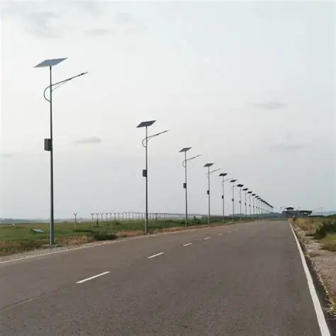
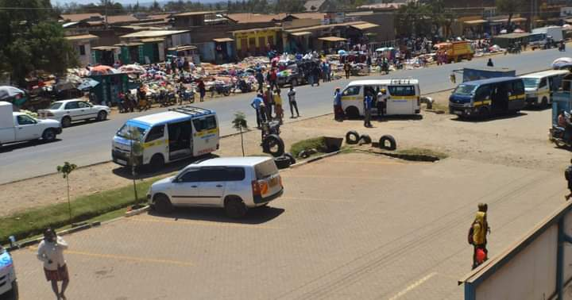
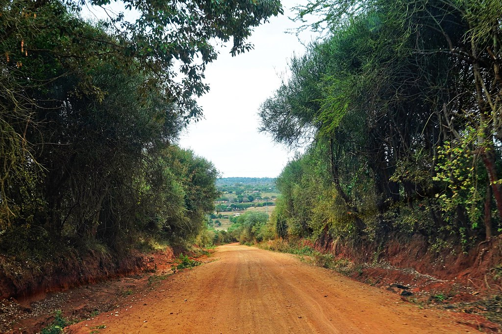

Smart Street Lighting
Installation of modern lighting systems across urban centers.
Building a modern, clean, sustainable and economically vibrant municipality serving the people of Kirita, Mairo-Inya and surrounding communities.
Building a modern and sustainable future.

Installation of modern lighting systems across urban centers.

Improving business spaces for traders and SMEs.

Expanding road networks to improve transportation.
Residents invited to contribute to urban planning discussions.
Municipality launches a weekly town clean-up exercise.
Online applications for permits and licenses now available.